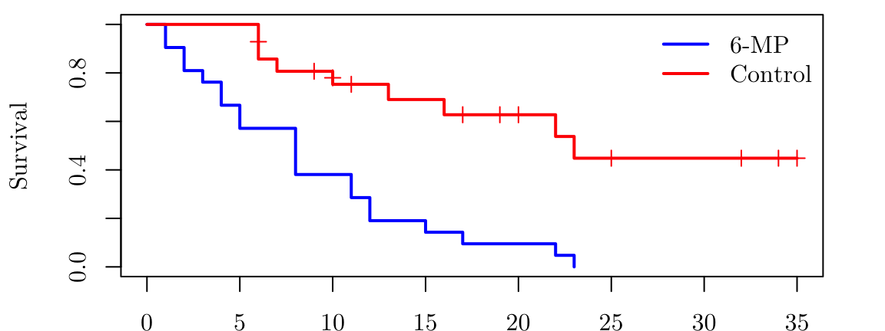

gehanControl <- survfit(Surv(time = gehan$time[gehan$treat == "6-MP" ], event = gehan$cens[gehan$treat == "6-MP"] ) ~ 1)
gehan6mp <- survfit(Surv(time = gehan$time[gehan$treat == "control"], event = gehan$cens[gehan$treat == "control"]) ~ 1)
par(family = "Latin Modern Roman 10", mar = c(1.85, 4.1, 0.5, 2.1))
plot( gehan6mp, mark.time = TRUE, conf.int = FALSE, col = "blue", lwd = 2, xlab = "Time (weeks)", ylab = "Survival", main = NA, xlim = c(0, 35))
lines(gehanControl, mark.time = TRUE, conf.int = FALSE, col = "red", lwd = 2)
legend("topright", legend = c("6-MP", "Control"), col = c("blue", "red"), lwd = 2, bty = "n")